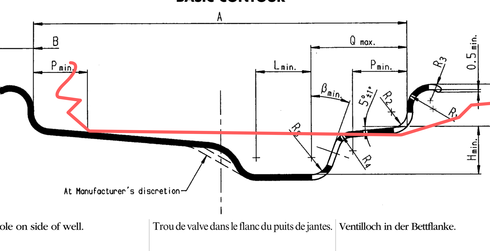
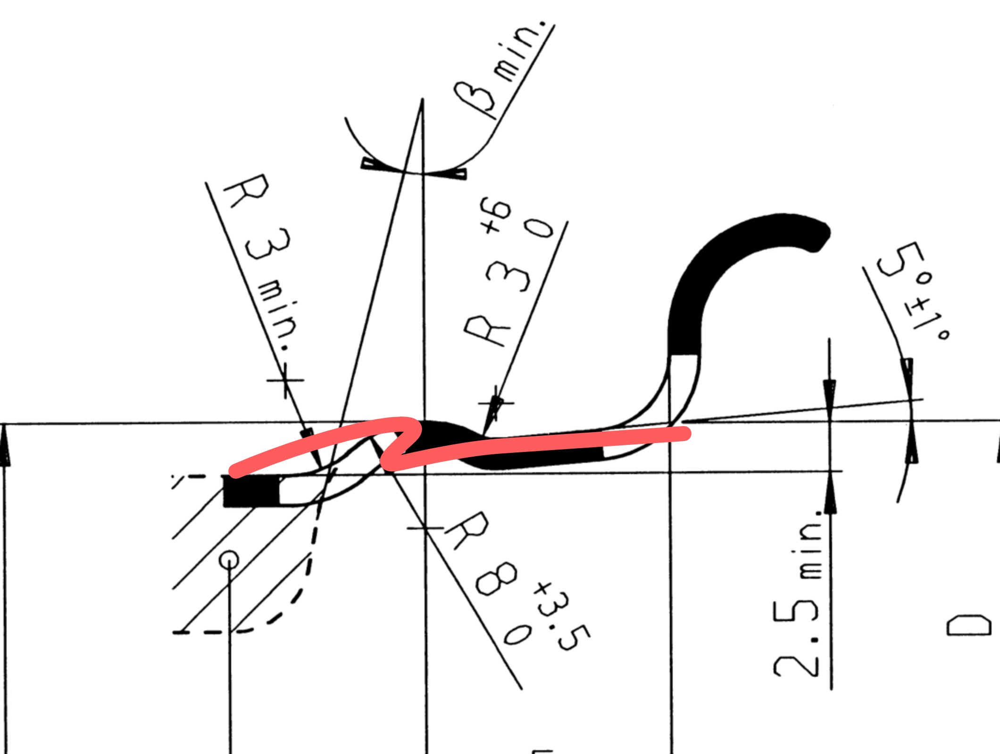

Generated by tyres/tools/build_tyre_designer_etrto_rim_artifacts.py from current Tyre Designer HTML SHA-256 a6487dba0cdfda555b887cb5124bee17539d39d3f7e5a5659f3df83dc274f9dc.
R.8 checks the basic J/H rim contour. R.11 checks the H-hump radius detail. The scan drawings are schematic; the hard dimensional gate is the numeric verifier.
Bitmap residual: mean 33.08 px, p90 79.62 px, misses 17.

Bitmap residual: mean 3.09 px, p90 8.24 px, misses 0.
